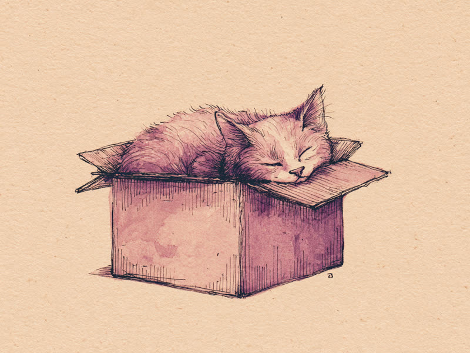

「もし入れるなら、座る」猫の宿命と、テープの四角にも反応する不思議。 Why do cats insist on squeezing into boxes clearly too small for them? "If I fits, I sits" turns out to be backed by real feline psychology.
「もし入れるなら、座る」猫の宿命
体がはみ出していても気にせず箱に収まろうとする猫の姿は、インターネットで長年愛されてきた光景です。この行動の背景には、野生時代から受け継がれた本能があると考えられています。狭い空間は外敵から身を隠しやすく、獲物を待ち伏せする姿勢にも近いため、猫にとって「狭くて囲まれた場所=安心できる場所」という感覚が根強く残っているのです。加えて猫は寒がりで、快適に感じる気温はおよそ30〜36℃前後とされ、体を丸めて収まることで熱を逃しにくくする効果もあります。
保護施設の研究でも実証済み
2014年にオランダで行われた保護猫を対象とした研究では、隠れられる箱を与えられた猫は、与えられなかった猫に比べてストレス指標が低く、新しい環境に早く慣れる傾向が確認されました。単なる「かわいい仕草」ではなく、猫にとって実際にストレスを和らげる行動だったというわけです。
出典: Vinke, C.M. et al. (2014). "Will a hiding box provide stress reduction for shelter cats?" Applied Animal Behaviour Science, 160, 86-93. doi:10.1016/j.applanim.2014.09.002
箱がなくても入りたくなる?「猫だまし錯視」
さらに面白いことに、床にビニールテープで四角い枠を作っただけで、実際には囲まれていないにもかかわらず、その中に座ろうとする猫が世界中で観察されています。これは「カニッツァ図形」と呼ばれる、輪郭線がなくても脳が図形を補完して認識してしまう錯視の一種が関係しているのではないかと言われています。実際の壁がなくても「囲まれている」と錯覚するほど、この習性は猫の中に深く刻まれているのかもしれません。